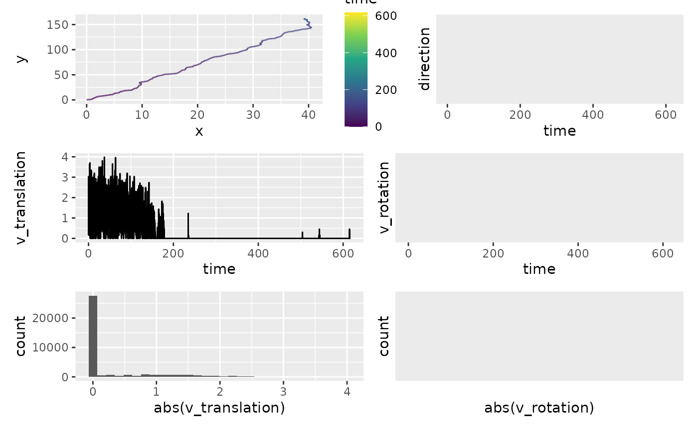
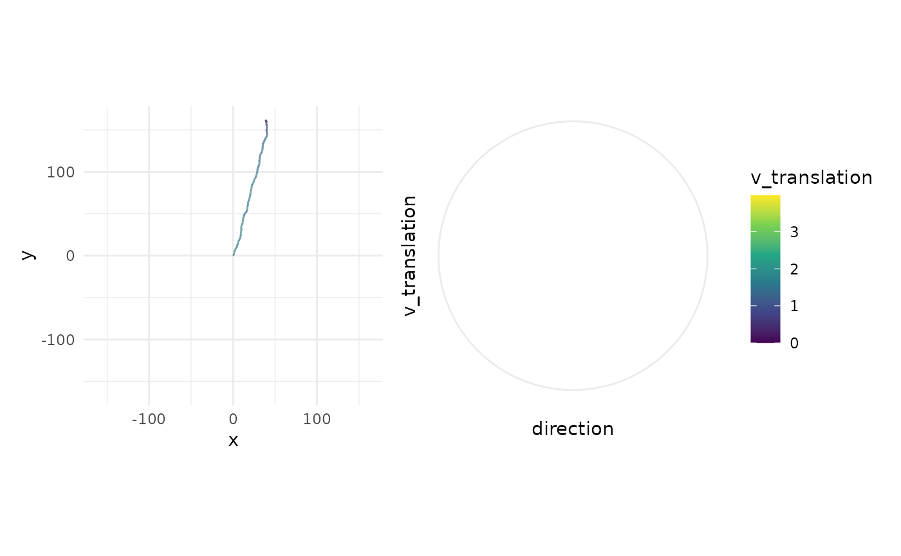

library(animovement)
#> Error in get(paste0(generic, ".", class), envir = get_method_env()) :
#> object 'type_sum.accel' not found
library(tibble)
library(ggplot2)
library(tidyr)
#>
#> Attaching package: 'tidyr'
#> The following object is masked from 'package:animovement':
#>
#> replace_na
library(dplyr, warn.conflicts = FALSE)
library(readxl)
library(here)
#> here() starts at /home/runner/work/animovement/animovement
here::i_am("vignettes/articles/calculate-kinematics.Rmd")
#> here() starts at /home/runner/work/animovement/animovementCalculate kinematics
When we work with movement data, we are often interested in more than
just where an animal is; we’re interested in how fast it moves,
where it is heading etc. calculate_kinematics calculates a
range of kinematic variables:
-
distance: The distance the animal moved since the last observation (simply calculated using Pythagoras’ theorem) -
v_translation: The translational velocity, like what you see on a speedometer in a car. -
direction: The direction (in radians) the animal is heading - where the arrow on the compass is heading. -
rotation: Difference from direction of the last observation. -
v_rotation: The rotational velocity (in rad/s).
# Augment all data in list
df_kinematics <- df_smooth |>
calculate_kinematics()
glimpse(df_kinematics)
#> Rows: 37,039
#> Columns: 13
#> Groups: individual, keypoint [1]
#> $ time <dbl> 0.00000000, 0.01666667, 0.03333333, 0.05000000, 0.066666…
#> $ individual <fct> NA, NA, NA, NA, NA, NA, NA, NA, NA, NA, NA, NA, NA, NA, …
#> $ keypoint <fct> centroid, centroid, centroid, centroid, centroid, centro…
#> $ x <dbl> NA, 0.002538071, 0.003807107, 0.006345178, 0.008883249, …
#> $ y <dbl> NA, 0.005076142, 0.007614213, 0.012690355, 0.024111675, …
#> $ confidence <dbl> NA, NA, NA, NA, NA, NA, NA, NA, NA, NA, NA, NA, NA, NA, …
#> $ d_translation <dbl> NA, NA, 0.002837650, 0.005675299, 0.011699930, 0.0056752…
#> $ v_translation <dbl> NA, NA, 0.1702590, 0.3405180, 0.7019958, 0.3405180, 1.22…
#> $ a_translation <dbl> NA, NA, NA, 10.215539, 21.688668, -21.688668, 53.234221,…
#> $ direction <circular> NA, NA, 1.1071487, 1.1071487, 1.3521274, 1.1071487,…
#> $ d_rotation <circular> NA, NA, NA, 0.00000000, 0.24497866, -0.24497866, -0…
#> $ v_rotation <circular> NA, NA, NA, 0.000000, -14.698720, 14.698720, 3.3299…
#> $ a_rotation <circular> NA, NA, NA, NA, -881.9232, 1763.8464, -682.1286, -9…Clean kinematics
df_kinematics_clean <- df_kinematics |>
filter_na_speed(threshold = 100)Alternatively, you can perform your own data cleaning methods.
df_kinematics_alternative <- df_kinematics |>
filter(v_translation > 0.25 & v_rotation < 200)Whatever way you choose is all up to you, but do make sure you do not just calculate summaries without knowing what’s in it.
Kinematics are much more prone to small values change. We assess these in two ways:
library(patchwork)
a <- df_kinematics_clean |>
ggplot(aes(x, y, colour = time)) +
geom_path() +
scale_colour_viridis_c()
b <- df_kinematics_clean |>
ggplot(aes(time, direction)) +
geom_line()
c <- df_kinematics_clean |>
ggplot(aes(time, v_translation)) +
geom_line()
d <- df_kinematics_clean |>
# filter(time < 20) |>
# filter(v_translation > 0) |>
ggplot(aes(time, v_rotation)) +
geom_line()
e <- df_kinematics_clean |>
ggplot(aes(abs(v_translation))) +
geom_histogram()
f <- df_kinematics_clean |>
ggplot(aes(abs(v_rotation))) +
geom_histogram()
(a + b) / (c + d) / (e + f)
#> Warning: Removed 2 rows containing missing values or values outside the scale range
#> (`geom_path()`).
#> Warning: Removed 138 rows containing missing values or values outside the scale range
#> (`geom_line()`).
#> Warning: Removed 2 rows containing missing values or values outside the scale range
#> (`geom_line()`).
#> Warning: Removed 139 rows containing missing values or values outside the scale range
#> (`geom_line()`).
#> `stat_bin()` using `bins = 30`. Pick better value with `binwidth`.
#> Warning: Removed 2 rows containing non-finite outside the scale range
#> (`stat_bin()`).
#> `stat_bin()` using `bins = 30`. Pick better value with `binwidth`.
#> Warning: Removed 27833 rows containing non-finite outside the scale range
#> (`stat_bin()`).
library(performance)
df_kinematics_clean |>
tidyr::drop_na(d_rotation) |>
select(d_rotation) |>
performance::check_outliers()
#> Adding missing grouping variables: `individual`, `keypoint`
#> 190 outliers detected: cases 39, 52, 66, 187, 205, 458, 464, 467, 477,
#> 481, 533, 536, 537, 545, 688, 689, 690, 748, 1009, 1015, 1026, 1157,
#> 1281, 1374, 1501, 1502, 2053, 2122, 2145, 2203, 2210, 2224, 2249, 2386,
#> 2410, 2459, 2625, 2842, 2862, 2879, 2911, 2912, 3013, 3061, 3074, 3120,
#> 3170, 3173, 3218, 3221, 3223, 3272, 3274, 3275, 3432, 3433, 3434, 3436,
#> 3669, 3701, 3702, 3740, 3882, 3977, 3978, 3988, 4010, 4071, 4304, 4408,
#> 4455, 4470, 4481, 4628, 4694, 4697, 5060, 5066, 5083, 5141, 5166, 5350,
#> 5428, 5431, 5464, 5707, 5796, 5833, 5840, 5842, 5899, 5994, 6018, 6089,
#> 6114, 6380, 6381, 6434, 6435, 6436, 6443, 6454, 6456, 6570, 6621, 6696,
#> 6754, 6755, 6772, 6799, 6800, 6801, 6884, 6980, 7024, 7026, 7027, 7028,
#> 7075, 7076, 7208, 7213, 7214, 7304, 7305, 7316, 7389, 7390, 7524, 7526,
#> 7557, 7602, 7644, 7649, 7657, 7665, 7691, 7727, 7738, 7775, 7776, 7777,
#> 7790, 7821, 7955, 7956, 8015, 8055, 8058, 8069, 8091, 8212, 8250, 8251,
#> 8319, 8320, 8321, 8553, 8562, 8593, 8612, 8613, 8667, 8669, 8688, 8717,
#> 8719, 8723, 8725, 8726, 8734, 8738, 8740, 8778, 8787, 8795, 8796, 9046,
#> 9050, 9058, 9060, 9063, 9067, 9072, 9093, 9105, 9131, 9143, 9165, 9178.
#> - Based on the following method and threshold: mahalanobis (10.828).
#> - For variable: d_rotation.
pl_direction <- df_kinematics_clean |>
# filter(time < 20) |>
ggplot(aes(x = direction, y = v_translation)) +
stat_density_2d(
geom = "tile",
aes(fill = after_stat(density)),
n = c(40, 10),
contour = F
) +
scale_fill_viridis_c() +
# scale_fill_gradientn(colours=rev(rainbow(32)[1:23])) +
coord_polar(
direction = -1,
start = -pi / 2
) +
# scale_x_continuous(limits = c(0,2*pi)) +
theme_minimal()
max_coord <- max(abs(c(df_kinematics_clean$x, df_kinematics_clean$y)), na.rm = TRUE)
pl_path <- df_kinematics_clean |>
ggplot(aes(x, y, colour = v_translation)) +
geom_path() +
coord_fixed() +
scale_x_continuous(limits = c(-max_coord, max_coord)) +
scale_y_continuous(limits = c(-max_coord, max_coord)) +
scale_colour_viridis_c() +
theme_minimal()
pl_path + pl_direction +
plot_layout(guides = "collect")
#> Warning: Removed 2 rows containing missing values or values outside the scale range
#> (`geom_path()`).
#> Warning: Removed 27649 rows containing non-finite outside the scale range
#> (`stat_density2d()`).